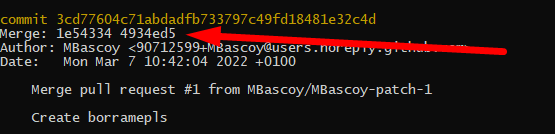

Como utilizar el comando Revert para deshacer la modificaciones de un commit.
El comando revert de git nos permite deshacer un commit concreto pero yendo hacia adelante en la historia, un revert no es lo mismo que un reset --hard, con el reset estamos haciendo que una rama vaya literalmente a un commit del pasado, con el revert lo que hacemos es revertir un commit concreto haciendo un nuevo commit que sea opuesto al que estamos revirtiendo, de manera que el resultado final de la rama es una rama sin el commit que hemos revertido.
Para hacer un revert lo hacemos de la siguiente manera:
git revert <id commit>
El caso de que queramos revertir un commit que es un merge tendremos que utilizar la opcion -m para indicar cual es el mainline que queremos seguir, ya que un merge son dos ramas que finalizan en una tenemos que indicar cual es la que queremos que siga el revert
Cuando tenemos un commit que es un merge se indica de la siguiente manera, indicando los dos commits que está mergeando:
Para revertir un merge lo haríamos de la siguiente manera:
git revert -m 1 <id commit>
A la opcion -m tenemos que pasarle un numero, si le pasamos 1 el revert seguirá la linea de la primera rama indicada en el merge, 1e54334 en este caso, si le pasamos un 2 el revert seguirá la linea del otro commit con el que está mergeado la rama., 4934ed5 en este caso.
Git | Revert